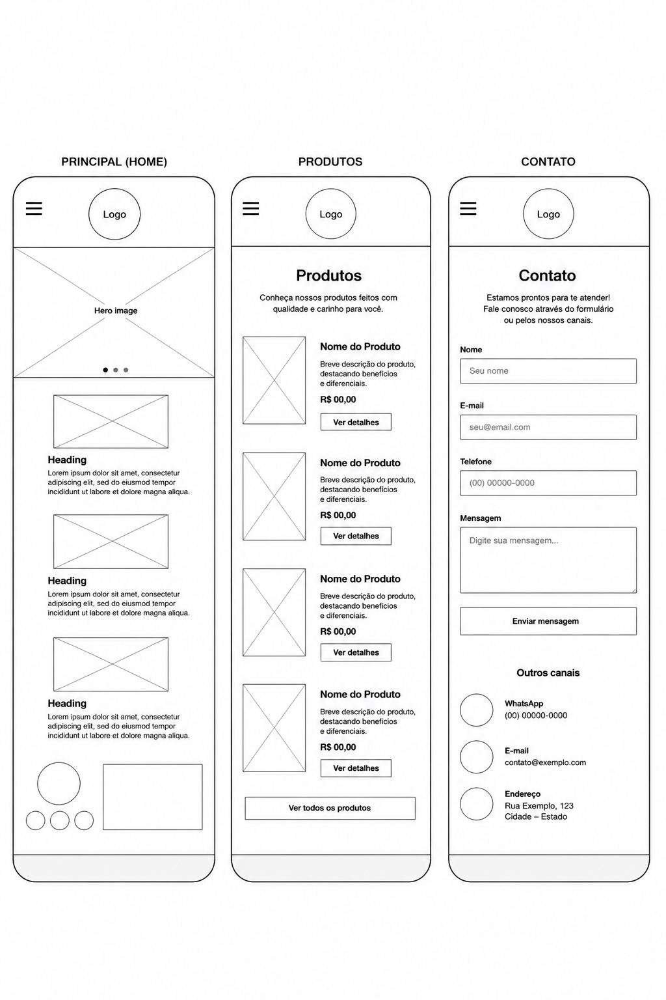
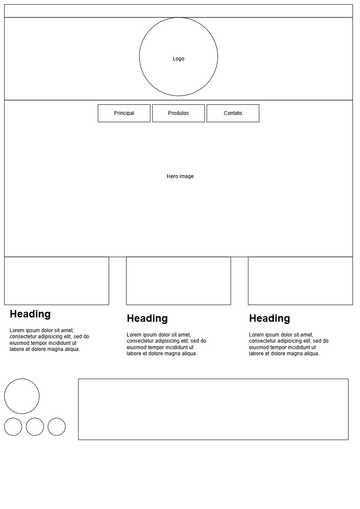
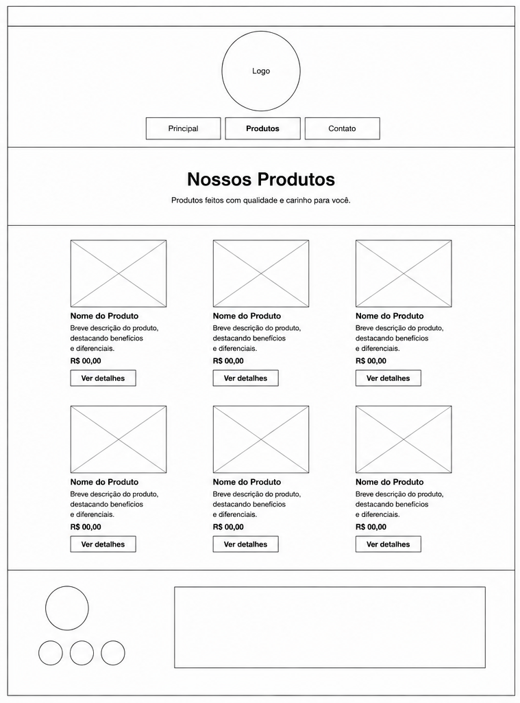
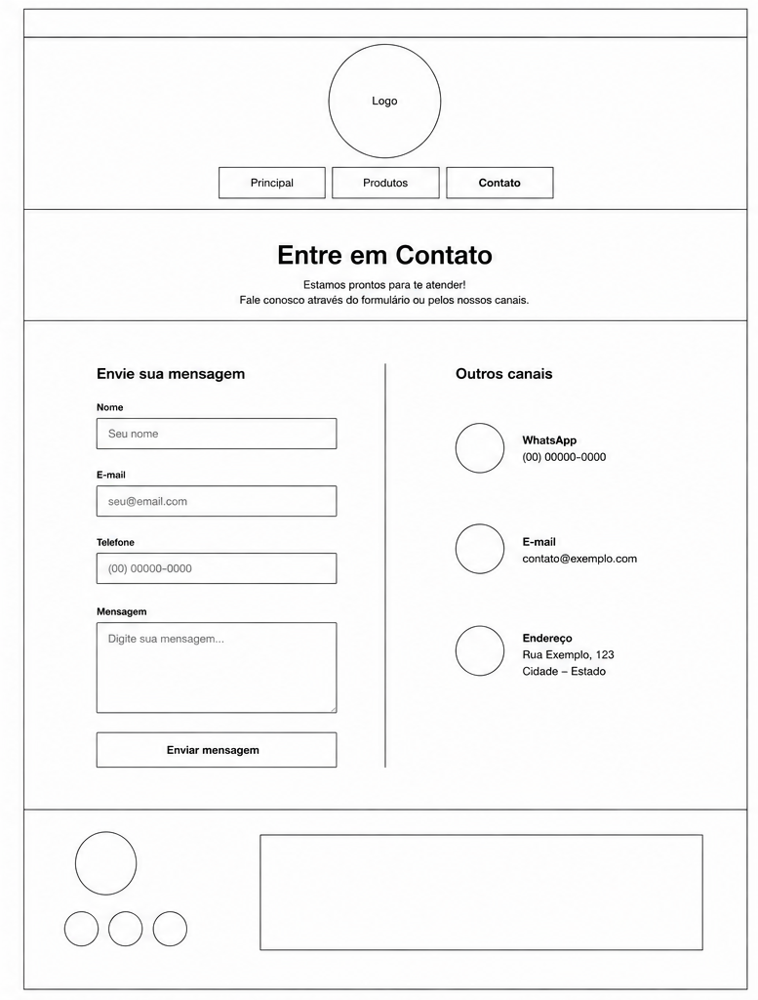

1. Nome do Site
Nome/Domínio: Confeitaria Favo (confeitariafavo.com.br)
Motivo da escolha: O nome "Favo" remete à doçura natural do mel, ao trabalho artesanal, minucioso e à aconchegante estrutura dos favos de mel. Transmite elegância, carinho e a sensação de receitas feitas com dedicação e ingredientes selecionados.
2. Finalidade do Site
O site da Confeitaria Favo serve como uma vitrine digital artesanal e canal direto de pedidos para clientes. A plataforma apresentará o cardápio completo de bolos, doces finos, tortas e sobremesas, além de permitir o agendamento de encomendas personalizadas para festas e eventos, consultar opções do dia para pronta-entrega e localizar a loja física.
3. Cenários do Público-Alvo
Abaixo estão as perguntas mais frequentes que os clientes da confeitaria farão ao acessar o site:
- Cenário 1: "Preciso encomendar um bolo personalizado para um aniversário de casamento. Onde posso ver os sabores, tamanhos disponíveis e prazos de antecedência para pedidos?"
- Cenário 2: "Estou buscando sobremesas para retirada hoje à tarde. Quais doces estão disponíveis no cardápio de pronta-entrega e qual o horário de funcionamento da loja?"
4. Esquema de Cores
A paleta de cores foi planejada para despertar o apetite e transmitir sofisticação e acolhimento através de tons quentes e naturais:
- Cor Primária (#3D2314 - Castanho Cacau): Utilizada em títulos, cabeçalho e elementos principais. Lembra o chocolate nobre e traz peso visual e elegância.
- Cor Secundária (#C87D55 - Caramelo Terracota): Utilizada em subtítulos, links e bordas acolhedoras, remetendo a caldas e assados artesanais.
- Cor de Acento (#E2A03F - Amarelo Mel/Favo): Utilizada em botões de destaque (chamadas para ação como "Fazer Pedido"), ícones e detalhes visuais.
- Cor do Corpo/Texto (#2C221E - Marrom Café Escuro): Substitui o preto puro para oferecer uma leitura suave, confortável e em harmonia com o tema gastronômico.
- Fundo (#FAF6F0 - Creme / Marfim): Cor neutra e aconchegante que remete a massas fofas e creme de baunilha, garantindo destaque aos produtos.
#3D2314
#C87D55
#E2A03F
#FAF6F0
5. Tipografia
Foram selecionadas duas fontes do Google Fonts que combinam refinamento e ótima leitura:
- Playfair Display (Serifada): Utilizada exclusivamente para **Títulos (H1, H2, H3)**. Suas serifas elegantes trazem o charme clássico das confeitarias artesanais sofisticadas.
- Poppins (Sem serifa): Utilizada no **corpo do texto, menus, detalhes do cardápio e botões**. Uma fonte geométrica, limpa e extremamente legível em dispositivos móveis.
6. Wireframe da Página Inicial
Estrutura visual da página inicial da Confeitaria Favo otimizada para navegação em dispositivos móveis e em computadores de mesa (desktop).
Visualização Mobile (Telas Pequenas)

Visualização Desktop (Telas Amplas)


